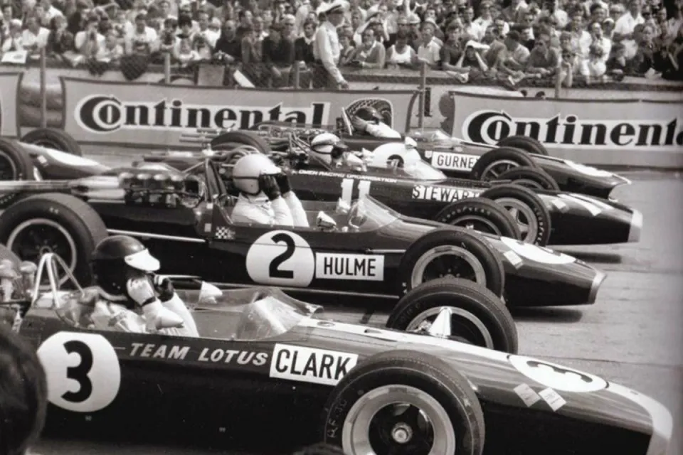
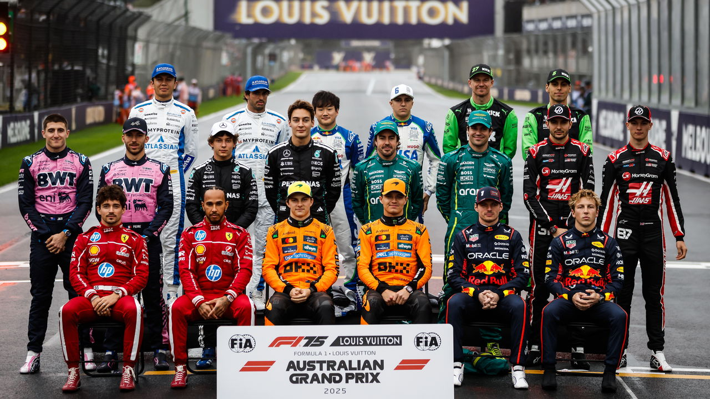

Como Surgiu a Fórmula 1
Conheça como surgiu a Fórmula 1 e entenda os acontecimentos que marcaram o início da principal categoria do automobilismo mundial. Explore a evolução do esporte ao longo das décadas, desde as primeiras corridas até a modernização dos carros e das tecnologias utilizadas atualmente. Descubra também como a Fórmula 1 conquistou milhões de fãs ao redor do mundo e se tornou um dos esportes mais populares da história.
Veja a origemConheça as Equipes
Explore as equipes que fazem parte da Fórmula 1 e conheça suas histórias, conquistas e momentos marcantes dentro das pistas. Descubra como cada escuderia contribuiu para a evolução da categoria, participando de grandes rivalidades e temporadas históricas que marcaram gerações de fãs do automobilismo. Conheça também algumas das equipes mais tradicionais e vitoriosas da história da Fórmula 1.
Veja mais equipesConheça os Pilotos
Descubra quem são os pilotos da Fórmula 1 e conheça suas trajetórias até chegarem à maior categoria do automobilismo mundial. Veja informações sobre os competidores da temporada atual, suas habilidades, equipes e principais resultados ao longo da carreira. Além disso, relembre pilotos históricos que marcaram a Fórmula 1 com títulos, rivalidades e momentos inesquecíveis dentro das pistas.
Explorar Pilotos
Circuitos
Conheça os circuitos mais tradicionais e desafiadores da Fórmula 1, presentes em diferentes países ao redor do mundo. Explore as características de cada pista, suas curvas marcantes, retas de alta velocidade e os desafios enfrentados pelos pilotos durante as corridas. Descubra também alguns dos momentos históricos que aconteceram nesses circuitos e que ajudaram a construir a história da categoria.
Veja mais circuitos